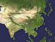

Asia

SAFARI
Users
When we Westerners adopt Asian recipes, we often replicate the recipe with great accurately, but the context in which it is served will likely not be at all authentic. The number of "sides" to the rice or bread is usually much reduced, often even to just one. Consequently the portions will be much larger and stand at least equal to the bread or rice. If a recipe includes meat we tend to up the amount substantially, from a flavoring element to a main ingredient.
Asian restaurants in the West tend to go too far in this direction because they think we expect it. They generally provide over-size portions and just a tiny bowl of rice, or even none, when rice should be the center of the meal. You should take care not to do this at home.
Asian seating arrangements are generally very uncomfortable for us, so we eat Asian dishes sitting at our high table and using our customary plates and utensils, perhaps with chopsticks added. The meal is even likely to be presented "Russian service" (food portioned to plates before they are brought to the table) and served in courses rather than all at once.
In truth, replicating Asian service is quite difficult for us. We might pull it off for some special occasion but not on a daily basis. In Asia an extended family has been the norm, all sitting down to the meal together. Resources are pooled so the family can afford at least one person who does almost nothing but cook all day. Further, children help with simpler tasks and in many regions any family that could actually afford food could afford servants to prepare it.
In the West, our insular families generally consist of just a man and a woman, or now often just one or the other, plus one or more obstinate, demanding, unruly and unhelpful children. Servants? You gotta be kidding. Given all the other responsibilities of work and running a household it's clearly a task to get just a couple dishes to the table, never mind a half dozen or more.
In much of Asia eating utensils other than fingers are practically unknown. India, for instance, lacks even spoons, which explains why soups are not served in India, except where Westerners gather. Knives never appear on an Asian table. Thailand, the only country in Asia that never fell to European rule, is the only one to adopt the fork and spoon - but the fork is used only to load the spoon. Thais, incidentally, use chopsticks only for noodle dishes which they regard as Chinese, despite loading them up with fish sauce and hot chilis.
For all these reasons, Asian recipes on clovegarden.com, while as faithful as practical in taste and ingredients, are proportioned and adjusted for a Western style service. In some cases the larger serving dictates lessening the intensity of a dish, but the original seasoning will be noted.
One feature of Asian presentation should always be adhered to, for authenticity and because it affects flavor and texture. Since there are never knives on the Asian table (makes assassination too easy), all food is cut to bite size in the kitchen, usually before cooking, or cooked to the point it breaks apart easily.
Another feature is insistence on freshness. While most associated with southeastern China where it's hard to sell anything that isn't verifiably alive and healthy, it's endemic throughout Asia. In India shopping is done twice a day to assure the vegetables are fresh. Our refrigeration partly alleviates this but is often negated by long transportation. Always buy and use fresh for Asian recipes, preferably from local sources, and use as soon as possible.
Actually, except for knives at the table and much ruder manners, a very similar dining environment prevailed in Europe, until the rise of modern cities and the beginning industrialization. This included extended families, servants, the central place of bread, and eating with the fingers. The fork didn't make it to France until the 1300s, to England until 1611, to Colonial America until 1630. Using it was long denounced by the Church as an insult to God, who gave us fingers to eat with.
The last shreds of the old system are seen in the service called "family style" in the U.S. and "European service" elsewhere. In the U.S. we see this mainly at traditional Thanksgiving dinners - in all else the Russian service rules.
All this changed for very real reasons, and as Asians take ever more out-sourcing work from us and do ever more of our manufacturing, they necessarily adopt Western ways. The Russian service that made Western restaurants practical is increasingly taking hold, as are Western based restaurant chains. Time is becoming ever more precious as well, and extended families are breaking up to take work in the cities just as they did in Europe.
Within a few decades, the norm for much of Asia will be eating just a few dishes at a high table with knives, spoons and forks, just as we do. In Japan there has been much grumbling that the younger folks are unable to use chopsticks.